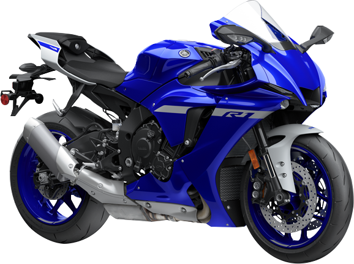

Yamaha R1
Motor
Motortyp
Slagvolym
Borrning och slag
Kompression
Max effekt
Max vridmoment
Smörjningssystem
Kopplingstyp
Tändsystem
Startsystem
Växellåda
Drivlina
Bensinförbrukning
CO2 utsläpp
Förgasare
4-takts, Vätskekylning, 4-cylindrig, DOHC, 4 ventiler
998 kubik
79,0 × 50,9 mm
13,0 : 1
147,1 kW (200 hk) @ 13 500 varv/min
113,3 Nm (11,6 kg-m) vid 11 500 varv/min
Våtsump
Våt, Flerskivig
TCI
Elektrisk
Konstant ingrepp, 6-växlad
Kedja
6,8 L/100 km
159 g/km
Elektronisk bränsleinsprutning
Chassi
Ram
Castervinkel
Försprång
Fjädrings fram
Fjädrings bak
Frambroms
Bakbroms
Framdäck
Bakdäck
Aluminium Deltabox, Diamant
24º
102 mm
Teleskopgaffel
länkupphängning, Svingarm
Dubbla hydrauliska skivbromsar, Ø 320 mm
Enkel hydraulisk skivbroms, Ø 220 mm
120/70 ZR17M/C (58W) slanglöst
190/55 ZR17M/C (75W) slanglöst